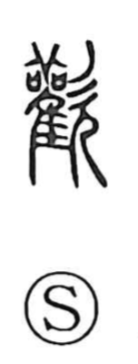

歓

Uncategorized
Kun: | On: kan
joy ・ pleasure ・ to rejoice
Explanation
歓 is the modern form of 歡. Shirakawa reads it as a phono-semantic graph centered on 雚 (kan), the image of a sacred stork used in bird divination—an element that also informs 観/觀, “to watch,” in the sense of observing the divine will through the bird’s signs. The added 欠 shows a person in profile with mouth open, voicing prayers. Together they evoke ritual prayer conducted with the stork and the rejoicing when that supplication is fulfilled. He further ties this group to agrarian rites: 勧/勸 adds a plow-like 力 to the stork motif as part of an agricultural ceremony, suggesting that 観 and 歓 likewise arose within an agricultural ritual context. Related variants such as 懽 and 讙 preserve the same reading and core sense of rejoicing.